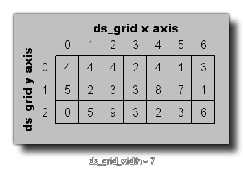

ds_grid_width(index);
| Argument | Description |
|---|---|
| index | This index of the grid to find the width of. |
Returns : Real
This function will return the width of the given grid. This value is the number of cells the grid has along the x-axis and is always an integer, as shown in the image below:

var i, j;
for (i = 0; i < ds_grid_width(grid); i += 1)
{
for (j = 0; j < ds_grid_height(grid); j += 1)
{
if ds_grid_get(grid, i, j) = 1
{
instance_create(i * 32, j * 32, obj_Wall);
}
}
}
The above code will loop through the ds_grid indexed in the variable "grid" and if the value found in any specific cell is equal to 1, it will then create an instance of "obj_Wall" at the appropriate position within the room.